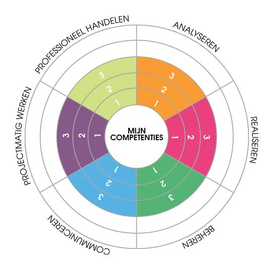

Als student aan de IT Factory werkte ik tijdens mijn opleiding aan de volgende competenties:.

Via de lijst van competenties in de navigatiebalk kun je doorklikken naar de verantwoording van mijn niveau en mijn bewijsstukken voor elke competentie.
Uitleg bij de competentieniveaus:
Niveau 0: Ik kan dit nog niet.
Niveau 1: Ik ken de basis. Ik kan eenvoudige taken in eenvoudige situaties uitvoeren. Ik doe wat ik moet doen en doe dit onder begeleiding.
Niveau 2: Ik heb inzicht in de materie en kan matig complexe taken uitvoeren in welomschreven situaties. Ik doe wat van me verwacht wordt, deels zelfstandig, deels ondersteund.
Niveau 3: Ik kan mijn kennis ook in minder vertrouwde situaties toepassen. Ik kan uitgebreide taken in reële situaties aanpakken. Ik doe dit zelfstandig en op eigen initiatief.
Niveau 4: Ik heb een doorgedreven kennis. Ik ben een expert en kan anderen begeleiden bij het uitvoeren van deze taken, ook in onverwachte situaties.
Niveau 5: Ik beheers de wetenschappelijke achtergronden van het beroep.
Om het diploma Professionele Bachelor te behalen is minimaal niveau 3 vereist op elk van de competenties.